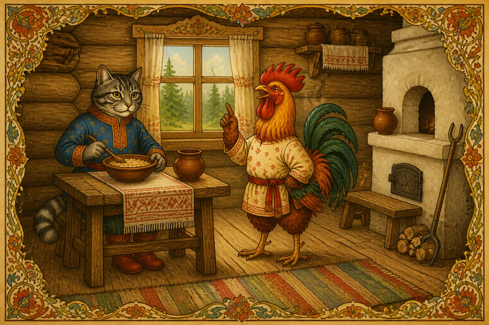
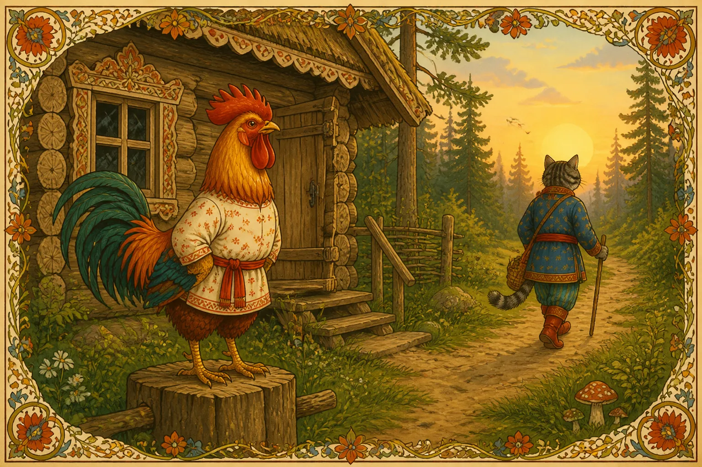
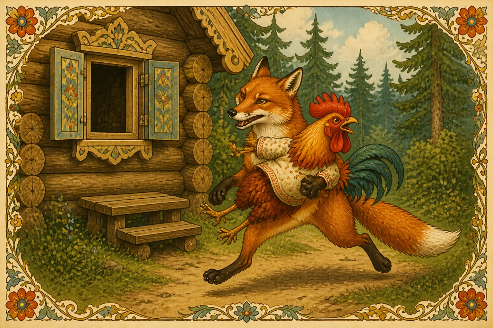
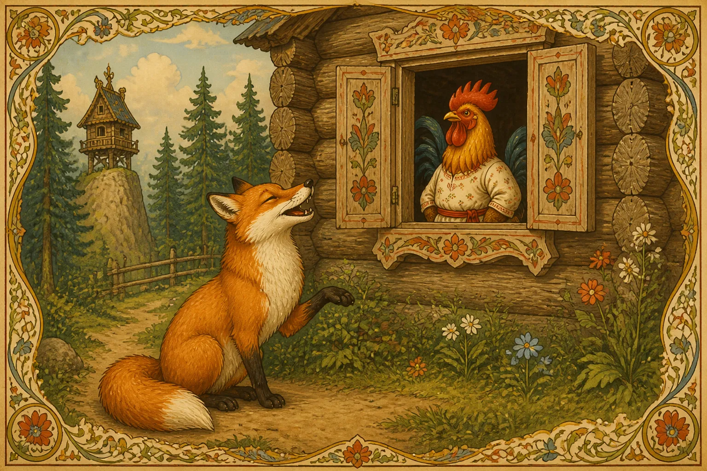
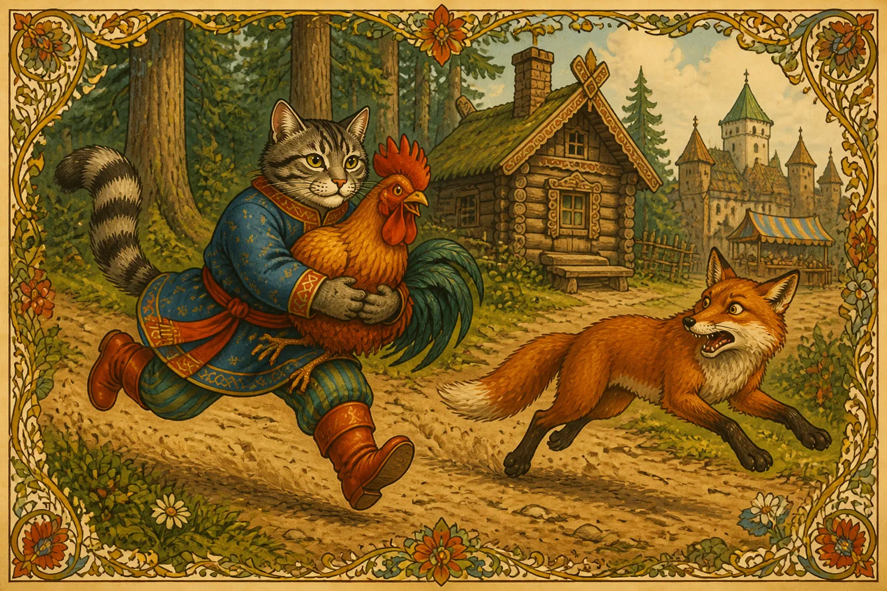
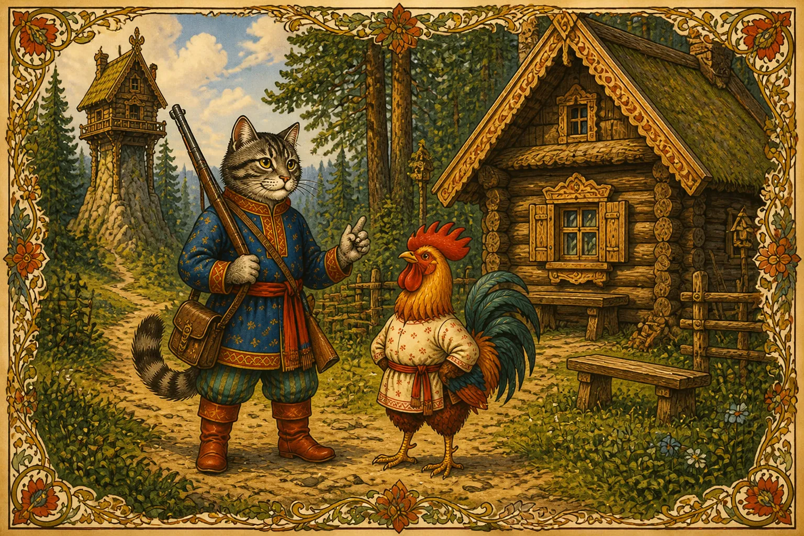
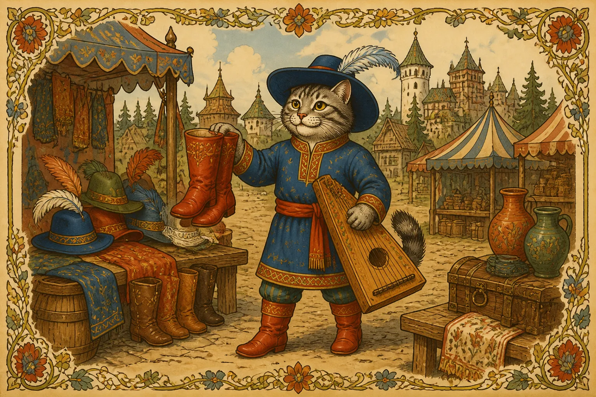
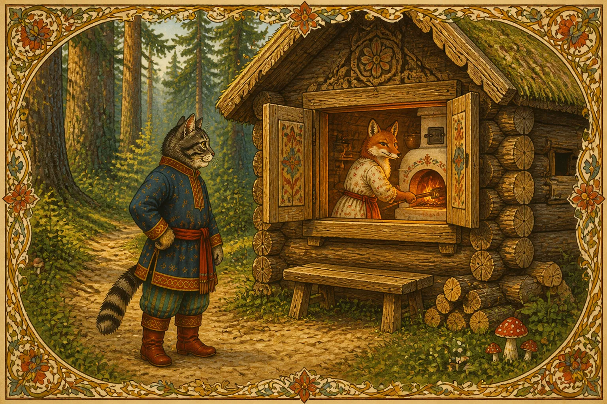
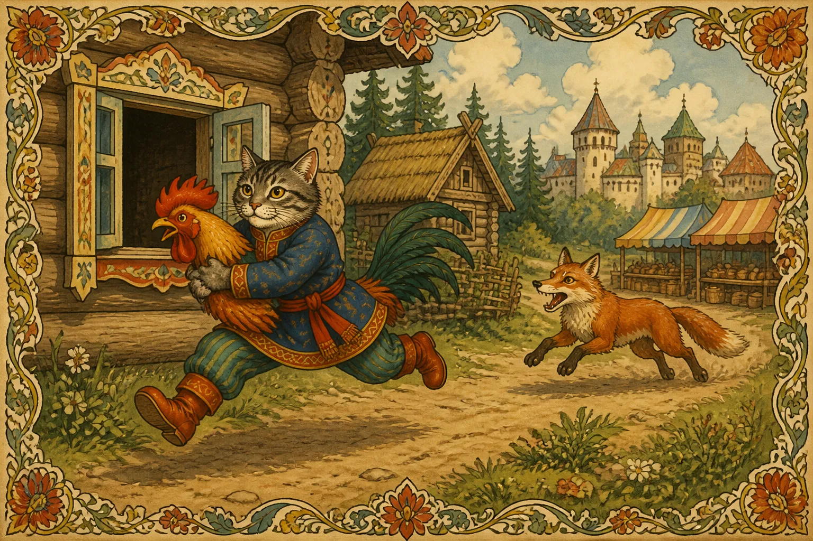
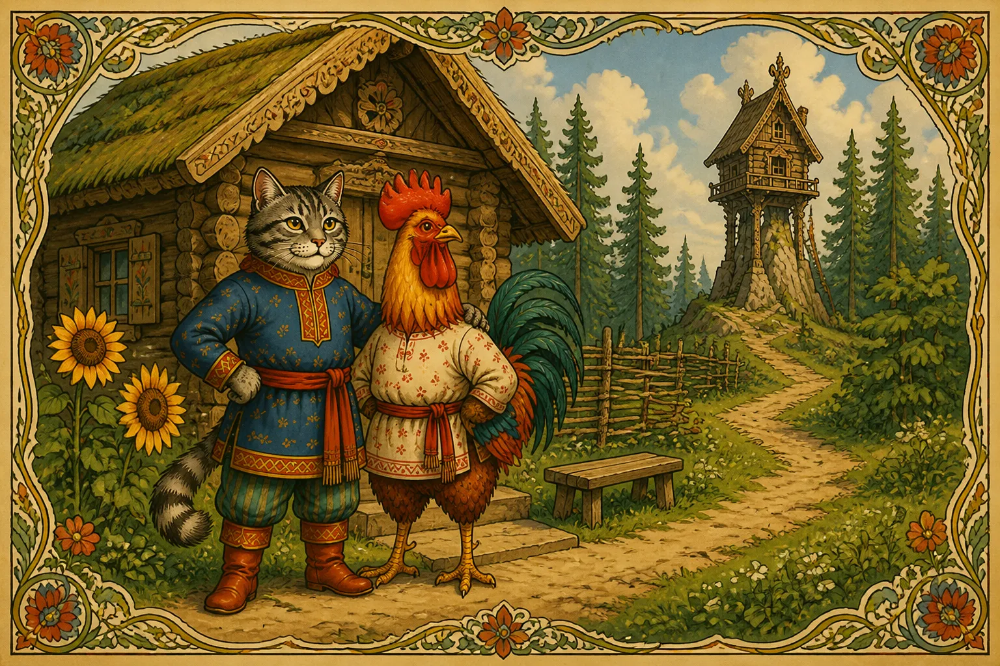

В лесу в маленькой избушке жили-были кот да петух. Кот рано утром вставал, на охоту ходил, а Петя-петушок оставался дом стеречь. Всё в избушке приберёт, пол чисто подметёт, вскочет на жёрдочку, песни поёт и кота ждёт. Бежала мимо лиса, услыхала, как петух песни поёт, захотелось ей петушиного мяса попробовать. Вот она села под окошко да и запела:
Петушок, петушок,
Золотой гребешок,
Выгляни в окошко —
Дам тебе горошку.

Петушок выглянул в окошко, а она его — цап-царап — схватила и понесла. Петушок напугался, закричал:

— Несёт меня лиса за тёмные леса, за высокие горы. Котик-братик, выручи меня.

Кот недалеко был, услыхал, помчался за лисой что было сил, отнял петушка и понёс его домой.

На другой день собирается кот на охоту и говорит петушку:
— Смотри, Петя, не выглядывай в окошко, не слушай лису, а то она тебя унесёт, съест и косточек не оставит.
Ушёл кот, а Петя-петушок в избушке всё прибрал, пол чисто подмёл, вскочил на жёрдочку — сидит, песни поёт, кота ждёт. А лиса уж тут как тут. Опять уселась под окошко и запела:
Петушок, петушок,
Золотой гребешок,
Выгляни в окошко —
Дам тебе горошку.
Петушок слушает и не выглядывает. Лиса бросила в окошко горсть гороху. Петушок горох склевал, а в окно не выглядывает. Лиса и говорит:
— Что это, Петя, какой ты гордый стал? Смотри, сколько у меня гороху.
Петя выглянул, а лиса его — цап-царап — схватила и понесла. Петушок испугался, закричал:
— Несёт меня лиса за тёмные леса, за высокие горы. Котик-братик, выручи у меня.
Кот хоть далеко был, а услыхал петушка. Погнался за лисой что было духу, догнал её, отнял петушка и принёс его домой.

На третий день собирается кот на охоту и говорит:
— Я сегодня далеко на охоту пойду, и кричать будешь — не услышу. Не слушай лису, не выглядывай в окошко.
Ушёл кот на охоту, а Петя-петушок всё в избушке прибрал, пол чисто подмёл, вскочил на жёрдочку — сидит, песни поёт, кота ждёт. А лиса опять тут как тут. Сидит под окошком, песенку поёт. А Петя-петушок не выглядывает. Лиса и говорит:
— Бежала я по дороге и видела: мужики ехали, пшено везли, один мешок худой был, всё пшено по дороге рассыпано, а подбирать некому. Из окна видать, вот погляди.
Петушок поверил, выглянул, а она его — цап-царап — схватила и понесла. Как петушок ни плакал, как ни кричал — не слыхал его кот, и унесла лиса петушка к себе домой. Приходит кот домой, а петушка-то нет. Погоревал, погоревал кот — делать нечего. Надо идти выручать товарища, наверное, его лиса утащила. Пошёл кот на базар, купил там себе сапоги, синий кафтан, шляпу с пером да музыку — гусли.

Настоящий музыкант стал. Идёт по лесу, увидел избушку, а там лиса печку топит.

Вот котя-коток встал на крылечко, ударил в струнушки и запел:
Трень, брень, гусельки,
Золотые струнушки.
Дома ли лиса?
Выходи, лиса!

Самой лисе нельзя от печи уйти, а послать некого. Вот и говорит она петушку:
— Ступай, Петя, погляди, кто меня зовёт, да скорей возвращайся!
Петя-петушок выскочил на окошко, а кот схватил его да побежал домой что было мочи. С тех пор опять кот да петух живут вместе, а лиса уж больше к ним не показывается.
